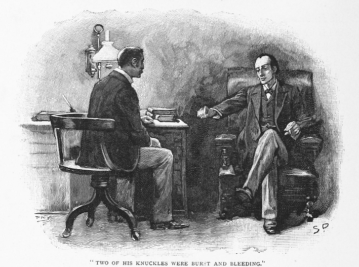
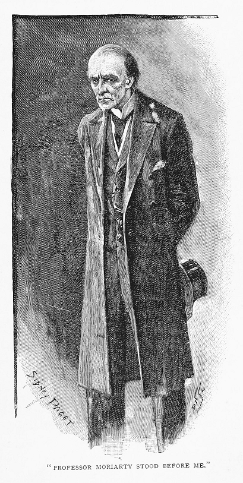
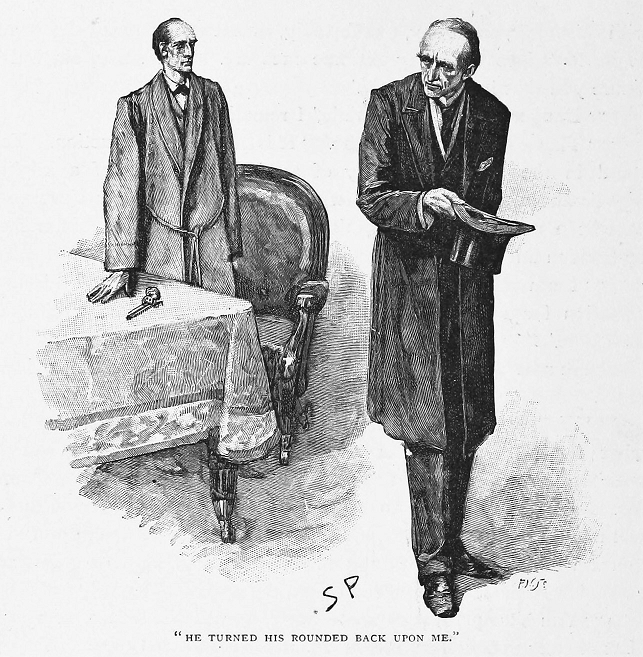
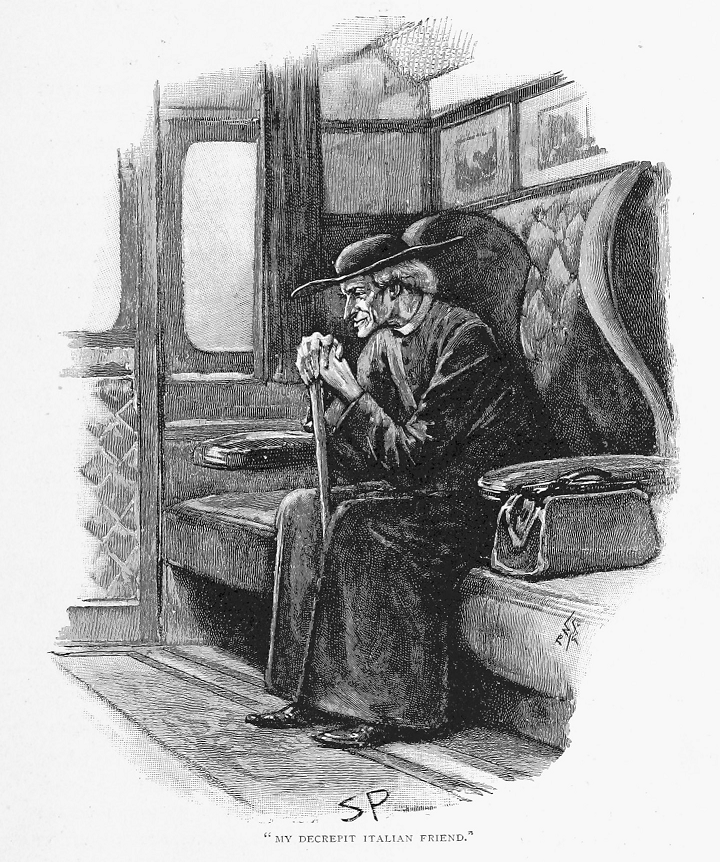
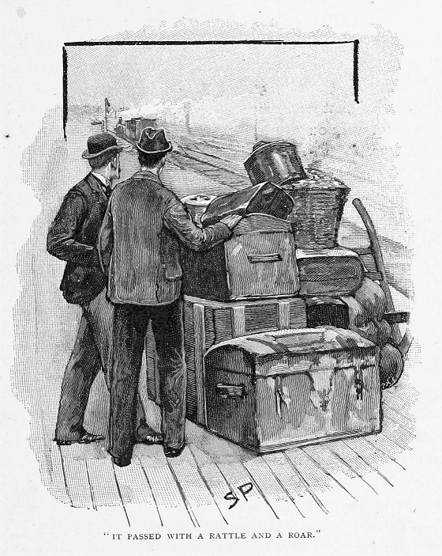
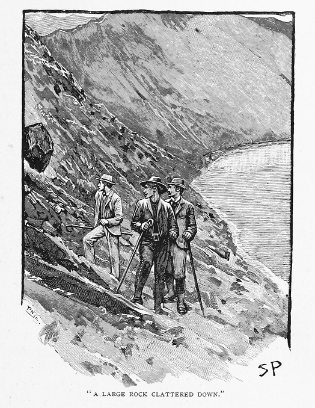
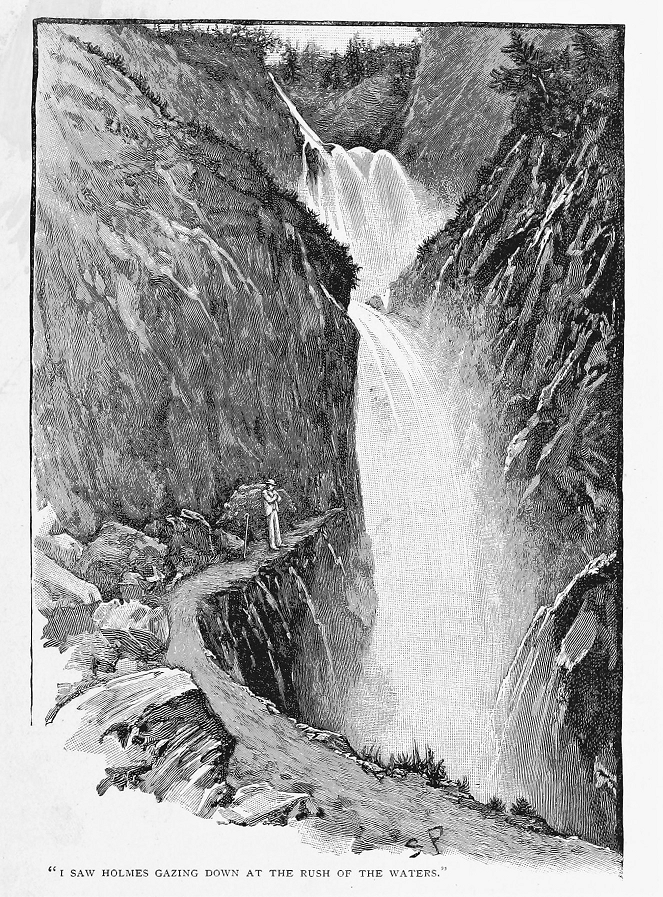
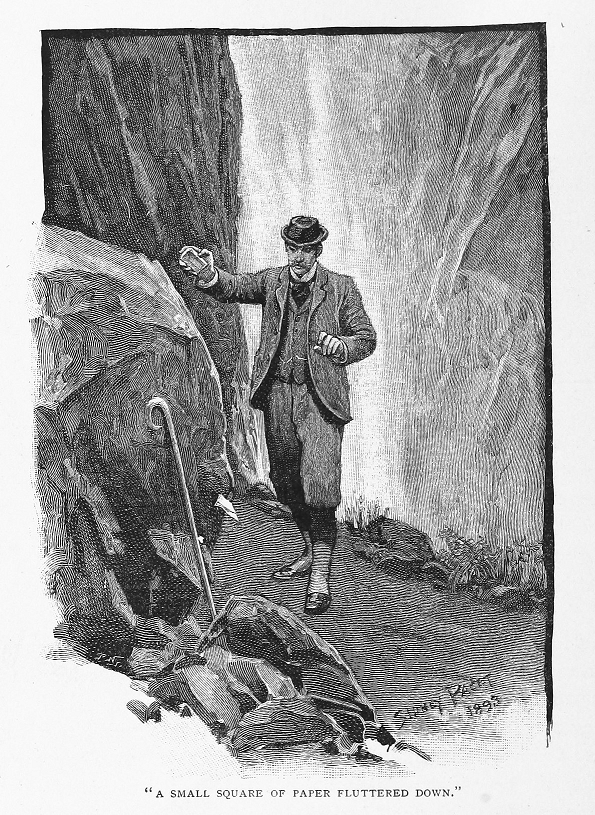
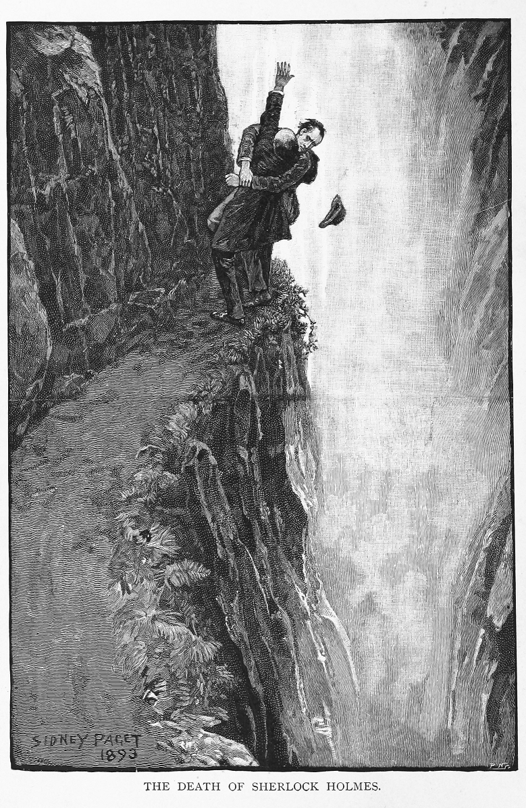

気が重いけれども私は今、愛用のペンを取ってこれを
覚えておいでの方もおられようが、こちらの結婚と、続く開業診療の開始後は、かつてあったホームズと私との深く親しい関係にもいくぶんか変化が生じた。捜査に相棒が入り用のときには相変わらず折に触れて私のもとへ来ていたが、この機会も次第に減じてゆき、とうとう一八九〇年には、気づけば何かしら自身で書き控えた事件もほんの三つとなっていた。その年の冬から翌一八九一年の春先にかけて、フランス政府の要請で出向いた最重要機密の一件などは私とて新聞で目にしたに過ぎず、ホームズから受け取った二通の
「なに、しばらく身体に無理を言わせていたからね。」と、こちらが言うが早いか私の表情を見て、わが友が言う。「近頃いささか多忙続きだ。部屋の鎧戸を下ろしても構わないね？」
室内の光源は、ちょうど読書に使っていた卓上の
「何かの用心かね？」と訊ねる私。
「いかにも。」
「何の？」
「空気銃の。」
「おいおいホームズ、本気かい？」
「僕のことを熟知する君ならばおそらく、ワトソン、僕が心配性でないことは承知のはずだが。とはいえ、おのが身に危険が迫るも、その認識を拒むというのはむしろ蛮勇というものだね。済まないがマッチを一本。」紙巻き煙草の煙を吸い込む友のさまは、鎮静作用がありがたいとでも言うかのようだ。
「夜分の訪問を詫びねばね。」と友人は言う、「ましてや、ほどなく裏庭の壁をよじ登って家を出て行く非常事態さえ、大目に見てもらわねばならぬ。」
「しかし本当に本気かい。」と、なおも訊ねる私。
友の差し出された手を

「ほら、ただの空気どころではない。」と言いつつ友は微笑む。「それどころか人間の手を引き裂くほどの威力がある。奥方は在宅かね？」
「泊まりでお出かけ中だ。」
「なるほど！ 君ひとりか。」
「その通り。」
「ならば好都合にも提案できる。君、一週間ほど大陸旅行をご一緒にどうか、とね。」
「行き先は？」
「どこでもいい。どうせ大差ない。」
これでは何もかもがどうにも奇妙奇天烈だ。そもそもホームズの性格からして、当てもなく休暇を取るわけがない上に、そのやつれた青白い顔に見えるものからは、気が張り詰めていることが察せる。こちらの顔に不審の色を見て取ったからか、例のごとく膝に肘が置かれ、指先も付き合わせられると、当人による状況説明が始まった。
「きっと初耳だろうが、モリアーティ教授のことは？」と言い出す友人。
「初めてだ。」
「うむ！ そこに本件の真髄と驚異がある！」と声を張る友人。「この男はロンドン全域を掌握しながらも、誰にも悟られていない。それこそが犯罪史の頂点に置かれる
「そこまでのやつなのか。」
「その経歴は目を見張るものだ。良家の出で、一流の教育を受け、生まれつき並外れた数学の才あり。齢二十一にして二項定理の論文をものし、それが全欧で大評判となった。その評価を追い風に、英国の小規模大学の一つに数学教授の席を得て、どこから見ても順風満帆。ところがこの男には、一族特有の魔性の一面があった。その血に流れる犯罪の素質は、和らぐどころか、当人の図抜けた知力のために増長し、この上なく危険なものに成り果てた。大学町でも黒い噂が立ちつのり、とうとう職を辞さざるを得なくなってロンドンに上京、そこで軍人向けの個人教師をして糊口をしのぐことに。と、ここまでは世によく知られているが、ただいまから君に説明することは、僕が独自につかんだことなのだ。
承知の通り、ワトソン、ロンドンの高等犯罪界隈について僕ほど精通している者はない。多年ずっと僕は、犯罪者の裏に何らかの力があることに感づいていた。法にどこまでも立ちはだかって悪人の隠れ蓑にもなる、何か秘密裏な組織による力が働いていると。それこそありとある事件――偽造、強盗、殺人――でも幾度となく僕は、この組織の存在を感じてきたばかりか、自分に持ち込まれていない知られざる犯罪のいくつにも、その手が伸びていると推測できる。長年その覆い隠す
この御大は犯罪界の
しかし教授の身辺は周到に鉄壁の守りが巡らされ、こちらがいくら仕掛けても、法廷で有罪にできるだけの証拠は得られそうになかった。僕の実力は承知しているね、ワトソン君、それでも三ヶ月後には、僕は自分と同等の知力を有する宿敵に相対していることを認めざるを得なかった。その犯罪に対する戦慄も、その手際への賞賛の前に消える。とはいえついにやつも、へまをやった――ごくごく瑣細なもつれだが――致命的なものであったがゆえに、相手に肉薄できる。この好機をとらえた僕は、その一点から手をつけて周囲に網を張り、今や包囲の準備も万端だ。三日ののち――つまりは来たる月曜――機は熟し、教授はその一味の幹部もろとも官憲の手に落ちるはずなのだ。そののちは今世紀最大の刑事裁判となるだろう、ゆうに四十を超える怪事件が解決され、全員が縛り首となる。だが早まった動きがあると、想像の通り、すんでの所でその目をすり抜けかねない。
さて、この件をモリアーティ教授に感づかれることなくやりおおせたなら万事よしなのだが。ところが相手はそれ以上の手練れ。僕が包囲網を張る一挙手一投足も気取られている。向こうも繰り返し突破を試みたが、そのたびにこちらも食い止めた。いやあ、わが友よ、もしその水面下の争いを詳細に記述できたなら、探偵史上最大の攻防戦として世に残っただろうね。僕もこれほど力を出したことはないし、これほど敵に押されたこともない。相手が深く切り込んでも、こちらが途中で押しとどめる。今朝、最後の一手を置いたから、わずか三日もあればこの仕事も完遂だ。と、自室で座りながらそのことに考えを巡らせていると、やおら戸が開いて、モリアーティ教授が僕の目前に立っているではないか。

僕は基本うろたえないたちだが、ワトソン、正直それでも不意を突かれたとも。ちょうど意識していた当の本人がわが家の入口に立っているのを目の当たりにしたのだからね。その
『貴殿の前頭の発達は、
確かに、そこに立つ男を見て僕はただちに、とてつもない身の危険にさらされていると悟った。相手の逃亡如何は、僕の口を封じられるかにかかっている。ならばと、咄嗟に僕は引き出しからリヴォルヴァを懐に滑らせた上で、衣服越しに相手へ狙いを付けていたのだ。言い当てられて、僕は銃を表に出し、撃鉄を起こしたまま卓上に置いた。変わらず相手は薄ら笑いをしながら
『予の素性がわからぬのも当然か。』と相手。
『それどころか、』と僕は言い直す、『当然、承知の上というものです。どうぞお掛けください。何か言い分がおありなら、五分でしたらうかがえます。』
『予の言い分は、何もかも貴殿の察しのとおり。』
『ならば僕の返事もそちらにはお察しかと。』と僕は答える。
『ゆずらぬと？』
『断固として。』
相手が片手をさっと懐に入れたので、僕も拳銃を卓から持ち上げた。しかし相手はただ手帳を取り出しただけで、そこには何か日付が書き付けてあったらしい。
『貴殿は一月四日、予の邪魔をし出した。』と言い出す相手。『二十三日、予の妨害をした。二月半ばまでに、予は貴殿から手ひどい不都合を被った。三月末、予の計画が完全に阻害された。そして現在四月の終わり、気づけば予の立場は、引き続き貴殿の追い立てのために、身の自由を失いかねない明確な危機にある。現状は耐えがたいものとなりつつある。』
『何かご提案でもおありですか。』と僕は訊ねる。
『やめることだ、ホームズ君。』と相手はその顔を震わせる。『その一択だとも。』
『月曜が来れば。』と僕。
『ちッちッ。』と相手。『貴殿ほどの知力がある人間ならば承知のはず。この件に対する帰結は一択しかありえない。貴殿の側が退くのが必須である。あのように事を運ぶものだから、こちらにも残る手立てが一つしかない。この案件に対して貴殿が取り組むさまをながめるのは、これまで知的娯楽でもあったのだが、忌憚なく言うならば、こう過激な手立てを講じるのは、予としても実に心苦しい。貴殿はそう微笑むが、これは間違いなく本心である。』
『危険が稼業の一部ですので。』と僕は告げる。
『危険どころではない。』と相手。『避けられぬ破滅である。貴殿が刃向かっておるのは、ただの個人のみならず強大な組織、その全容とていくら貴殿でも全知力をもってしてもいまだ計り知れぬ組織である。貴殿こそ道をゆずるのだ、ホームズ君、さもなくば踏みつぶされるまで。』
『いやはや、』と言いながら僕は立ち上がる、『この楽しい会話につられて、よそで僕を待つ重要案件も放り出すところでした。』
相手も立ち上がり、無言で僕を見据えて、悲しそうに
『やれやれ。』と、ようやく相手が口を開く。『どうにも残念だが、予もこれまで万事を尽くした。貴殿の
『ご挨拶承りました、モリアーティ殿。』と僕は言う。『僕も受けて立ちましょう。すなわち、こちらの望む結果が確実となるならば、この世のために、そちらの望みを受け入れるのもやぶさかではないのです。』
『予が貴殿に約束できるのは、二つに一つぞ。』と相手は吐き捨て、そしてその猫背をこちらに向けて、ぎろりとした目を瞬きさせながら退室した。

以上がモリアーティ教授とのただ一回の対面だ。正直のところ、僕の胸には不快な余韻が残った。いやに丁寧で落ち着いたその話し方には、裏表なく揺るぎないものがあり、ただのごろつきにはなせない振る舞いだった。むろん君は『なぜ官憲にこの張本人を見張らせないのか』と言うだろう。その理由は、強襲があるとすればその手先からだと僕は確信しているからだ。そうなるという紛れもない確証もある。」
「まさかすでに襲撃が？」
「ワトソン君、モリアーティ教授はおのれの足下に雑草を生やしたままにする人物ではない。日中ある用向きのため僕はオックスフォード街へ出かけた。途中ベンティンク街からウェルベック街への丁字路を渡ろうとしたとき、いきなり二頭立ての箱馬車が猛然と突っ込んできて、ぱっと一瞬ぶつかりそうになった。僕は歩道に跳び退いたから、すんでのところで命は助かった。箱馬車はメアリルボーン街まで突き進んで、あっという間に見えなくなる。そのあとはなるべく歩道に寄ったのだが、ワトソン、ヴィア街を進んでいたところ、煉瓦がある家屋の屋上から落ちてきてね、僕のほんの足の先で粉々に砕けたのだ。警察を呼んでその場所を調べてもらった。結果、屋上には修繕用の瓦や煉瓦が積まれてあるから、風でそのひとつが飛ばされたのだとして、一切を片付けようとする。むろん、別の真相がわかっていても、証明のしようがない。それから辻馬車をつかまえて、ペル・メルにある兄の部屋へと赴いて、日が暮れるまでそこでやり過ごした。かくして君のもとへたどり着いたわけだが、その途上、棍棒を手にした荒くれ者に襲われた。こちらからそいつをぶちのめして、警察に身柄を引き渡した。とはいえ、まず間違いなく、その前歯で僕の関節を擦りむかせた男と、あの引退数学教師とのあいだの接点は見つからないだろうと断言できる。御大はおそらく、十マイルは離れたところの黒板で問題を解いているはずだ。ここまで言えば当然だろう、ワトソン？ 僕がこの部屋に入ってまず鎧戸をすべて下ろしたことも、それから表玄関よりも目立たない脱出口から家を出ることの許しを得ないと仕方がないということも。」
これまでにもわが友人の胆力にはたびたび感嘆したものだが、今回を超えるものはない。一連の出来事をまとめればまさに恐怖の一日であるのに、穏やかに座して逐一確認してゆくのだから。
「今晩はうちで明かすのかい？」と私。
「いいや、ありがたいが危険な客ともなりかねない。策も一通り講じてある以上、きっと万事問題ない。事はここまで上々なのだから、そのまま逮捕に向かう限りは僕の手出しなしでもうまく運んでゆくのだが、さすがに有罪に持ち込む段には僕の存在が必須だ。したがって明白なこととして、それこそ警察が自在に動き出すまでの残る数日、僕はどこかへ身を隠した方が得策なのだ。というわけで、君とともに大陸へ出かけられたなら、まさに欣快なのだが。」
「仕事は暇だよ。」と私。「それに留守を頼める隣人もいる。よければ私も行こう。」
「明朝出発でも？」
「必要なら。」
「ああ実に必要だとも。では、君にも指示を。どうかワトソン君、一字一句この通りに従ってくれたまえ。君は今、欧州一頭の切れる悪人と欧州最凶の犯罪組織を相手に、僕と二人協力の
「どこで落ち合う？」
「駅で。前から二両目の一等車を予約してある。」
「ではその車両で待ち合わせだね？」
「ああ。」
その夜は泊まっていくようホームズにすすめたが聞いてくれなかった。そうすれば今いるこの家に厄介事を持ち込むことになると考えて、あえて出て行くしかないと友人が思っているのは、私にもよくわかった。翌日の計画について手短に言い足してから、立ち上がった友人は私とともに庭に出た。そしてモーティマ街に続く壁をよじ登ったあとは、すぐさま口笛でハンソム馬車を呼び、乗り込んで走り去っていく物音が聞こえた。
あくる朝、私は一字一句ホームズの指示の通りにした。こちらを待ち伏せしている馬車には引っかからないよう警戒しつつ、ハンソム馬車をつかまえさせて、朝食後ただちに私はその二輪馬車でラウザー拱廊へ行き、そこを全速力で駆け抜けた。すると待っていたブルーム馬車に、黒の外套に身を包んだ大柄の御者もいたので、私が乗り込むとすぐさま一頭立ての馬に鞭が振るわれ、箱馬車は走り出してヴィクトリア駅へと到着。下車するとたちまち馬車は方向転換、こちらを一瞥することもなくまた走り去っていった。
ここまで驚くほど順調だった。私の荷物も待ち受けていて、難なくホームズの指定した車両も発見、ましてや〈貸切り〉の印があるのはその一輌だけである。このときの私の唯一の不安の種は、ホームズの姿が見えないことだった。駅の時計は出発予定時刻まで七分しかない。旅行者や見送りの人々のうちに、わが友の軽やかな姿を探してみたものの詮なし。その気配もない。片言の英語で赤帽相手に

「ワトソン君。」と声がする。「まだおはようの挨拶はもらえないのかな。」
驚きを抑えきれないまま振り向いた。老僧がその顔をこちらに向けている。ほんの刹那、皺が消えてなくなり、顎を引いて鼻を突き出すのがやめられ、下唇の突き出しも引っ込められ、もごもご口も止まり、うつろな目にも光が戻って、猫背も伸ばされた。次の瞬間にはしゃっきりした姿勢も崩されたので、ホームズは現れたのと同じ早さで正体を隠したわけだ。
「いやはや！」と叫ぶ私。「これはたまげた！」
「何事もやはり用心だ。」とささやく友人。「連中が気炎を吐いてこちらを追っていると想定するに足る理由がある。ああ、あそこにモリアーティ本人が。」
とホームズが言い出したときにはもう列車は出発しかけていた。一目後方を見やると、背の高い男が猛然と人混みをかき分けながら、列車を止めたいかのように手を振っている。しかしもう手遅れで、とうに列車は加速がついていたから、あっという間に勢いよく駅から飛び出していた。
「あらゆる用心をしたが、見ての通り少々きわどいところだった。」と言いながらホームズは笑う。立ち上がると、変装に使っていた黒の司祭服と帽子を脱ぎ捨て、手提げ鞄に詰め込んだ。
「朝刊に目は通したかい、ワトソン？」
「いや。」
「ではベイカー街の件はまだ？」
「ベイカー街？」
「昨夜、僕らの部屋が放火された。大した被害はなかったが。」
「なんだってホームズ！ そんなまさか。」
「例の棍棒男が逮捕されたあと、僕の足取りをすっかり見失ったに相違ない。でなければ、僕が自宅に戻ったなどと考えるはずがない。とはいえ、あからさまに警戒して君のことを見張っていたようだから、それもあってモリアーティもヴィクトリア駅まで辿り着けたようだ。しくじりなく来られたね？」
「教えてくれた通りにしっかり。」
「ブルーム馬車は見つかった？」
「ああ、待機していた。」
「御者の顔に気づいたかね？」
「いいや。」
「あれは兄のマイクロフトだ。このような事件でも、金で人を雇わず秘密裏にうまく事を運べるというわけだ。しかしモリアーティへの対策を練らねば。」
「これは特急だし、終点で連絡する汽船も走っているのだから、実のところ相手を
「ワトソン君、どうも僕の発言を飲み込めていないようだ。前にも言ったが、この男はまさしく僕と同等の知的水準にあると考えうるのだ。こちらが追っ手だったなら、ささいな邪魔立てくらい、させるままにしておくとも。いやはや、相手をあなどってはいけない。」
「そいつに何ができるね？」
「しかし僕なら？」
「うむ、君なら何をする？」
「臨時列車を手配する。」
「でも、間に合わんのでは。」
「そうでもない。この列車はカンタベリに一時停車する。しかも汽船の乗り換えは毎回少なくとも十五分の遅れが出る。港でなら追いつける。」
「
「それではこの三ヶ月の努力が台無しになる。大きな魚は釣れても、小魚たちが慌てて網から逃げ出しかねない。月曜には一網打尽の手はずなのだ。否、逮捕は却下。」
「ではどうする？」
「僕らはカンタベリで下車する。」
「それから？」
「うむ、そのあとは州をまたいでニューヘイヴンの港町の方へ、そこから海を越えて対岸のディエップが順当だ。再度モリアーティは僕ならやることをやる。パリまで乗ってきたやつは、僕らの荷物を見張って、待合所で二日間は待つ。そのあいだにこちらは一組の旅行鞄を奮発して購入、現地の産業を支援しつつ各国を旅して、のんびりと道行きつつルクセンブルクとバーゼル経由でスイスへと入る。」
私自身、きつい旅ができるほどもう若くもないので、荷物がなくなるだけでもかなり不都合で受け入れがたいのだが、正直のところ、名状しがたい悪名でその経歴が真っ黒な男を相手に、逃げ隠れを余儀なくさせられるのだと思うと、何とも参ってしまう。とはいえ、私よりもホームズの方がしっかり状況把握できているのは明白だった。ゆえに、カンタベリで我々は下車したわけが、あいにくニューヘイヴン行きの列車は一時間待たないと乗れないことがわかった。
どうにも後ろ髪引かれる思いで、私は自分の衣類が積まれた手荷物車の走り去る後ろ姿を見ていたが、そのときホームズがこちらの袖を引っ張って、反対側の鉄路の先を指出した。
「もう、ほら。」と友人。
はるか遠くケントの森のあいだから細い煙がたなびいている。一分ののち、一輌のみを引いた機関車が現れて、駅へと続く開けた

「ご覧の有様だ。」とホームズが言うそばで、転轍機のあたりでがたごと車体を揺らす汽車をふたりしてながめた。「ほら、我らが友の知能にも限界がある。僕がやる推理と行動をしかるべく読めていたならば、不意打ちにもなっていたろうに。」
「こちらに追いついていたらどうするつもりだったのか。」
「少しの疑いの余地もなく、僕の息の根を止めようとするとも。しかしながらこれはふたりで行っている
その日の夜にはふたりしてブリュッセルまで行き、そこで二日過ごしてから、三日目にははるばるストラスブールへ移動した。月曜の朝、ホームズはロンドン警察に電報を打ったが、その晩にはホテルにその返事が届いていることがわかった。開封したホームズはしばらくして、苦悶の声を上げながらそれを暖炉内へと投げこむ。
「予想できたことだ！」と友人はうめく。「やつに逃げられた！」
「モリアーティ？」
「やつを除く一味全員が確保された。やつはうまく撒いたのだ。むろん僕が国を出た時点で、やつと張り合える者はいなくなった。とはいえ、官憲の手中に
「なぜ？」
「つまり、君にとって僕は今や、一緒にいるだけで危険な人物だからだ。あの男の縄張りはなくなった。ロンドンに戻ればおしまいだ。やつの性格に対する僕の読みが当たっているなら、これから全力で手ずから僕に報復を遂げようとするはずだ。あの短い対面の際にもあれだけのことを言っているし、やつは本気だと思う。絶対に君は普段の仕事に戻ったほうがいい。」
古なじみであるばかりか軍務経験者である人間には、これは訴えとしてもほとんど効き目がなかった。ストラスブールの
一週間楽しくローヌ渓谷の奥へと散策してから、ロイクでわきに逸れた我々は、まだ雪深いゲンミ峠を越え、そしてインターラーケンを経由してマイリンゲンまで来た。それは愉快な旅であり、下には春のうららかな緑、上には冬のけがれない白があった。とはいえ、片時もホームズが自分に覆い被さる影のことを忘れていないのは、私にも明らかだった。くつろげるアルプスの村々でもうら寂しい山道であっても、誰かと行き交えばもれなく顔をさっと一瞥、するどく人改めをすることから、ただ歩くにも追っ手の危険があると強く確信していることがわかる。

そういえば一度、ゲンミ峠を越える折に鬱々たるダウベン湖の畔を歩いていると、大きな岩が我々の右手の尾根から崩れてごろごろと落ち転がり、背後の湖に音を立てて沈んだことがあった。咄嗟にホームズが尾根まで駆け上がり、そびえ立つ峰に立って四方八方へ首を伸ばしてみた。案内人が、落石はこのあたり春の時期にはよくあることだと言うも、聞く耳持たなかった。友人は無言だったが、期待通りの確認ができたという風情で、私に微笑むのだった。
警戒心を全開にしていても、友人は気を沈ませていたわけではない。むしろあれほど溌溂とした友の姿を目にした覚えがない。繰り返し一つの真理に立ち返っているようだった。モリアーティの手から世を救えるのならば、これまで自分がやってきたことすべてを終わりにしても構わないのだ、と。
「まあこれくらいは言ってもよいと思うのだが、ワトソン、僕のこれまでの人生もまったく無駄ではなかった。」と友人は告げる。「もし僕の事件解決の記録が今夜おしまいになるとしても、その価値は粛々と評価したい。ロンドンの空気も僕がいたおかげで清らかになった。千を超える事件を経てなお、今まで自分の力を悪いことに使った覚えはない。この頃は僕も、世の人がわざと起こしたうわべだけのものよりも、自然現象のもたらす問題について調べてみたい心持ちでね。記憶に基づいた君の執筆も幕引きかな、ワトソン、欧州一危険かつ最強な犯罪者の逮捕か退治によって、まさしく僕の経歴に有終の美を飾るこの日にね。」
話は残り少なくなったが、ここからは簡潔ながらも正確に語るとしよう。くどくどしく話したい事柄でもなし、とはいえ委細を漏らしてはならないというおのれの義務も自覚している。
五月三日のこと、マイリンゲンという小さな村にたどり着いた我々は、そこでペーター・シュタイラーというご老人が経営している
確かにすさまじい場所だった。雪解けで増水した奔流が巨大な滝壺へと流れ込み、そこから
滝を巡る小径は片側だけで、全体は一望できるものの、急に行き止まりになるので、旅人は来た道を引き返すしかない。我々も踵を返して戻っていたところ、目の前にスイス人の青年が走ってきて、その手には手紙があった。今出てきたばかりの投宿先の印が入った便箋で、宿の主人から私宛になっていた。どうやら我々が出発してほんの数分後に到着したさる英国婦人が、肺の病で危篤らしい。冬のあいだはダヴォス・プラッツに滞在していたその人物は、現在ルツェルンにいる知人たちと合流しようと旅の途上だったが、いきなり喀血に見舞われたそうだ。おそらくもう数時間ももちそうにないが、英国人の医者に診てもらえるなら大いに慰めとなるから、もし私だけ戻ってこられるなら云々。正直者のシュタイラーは追伸で、婦人はスイス人医者の診察を頑として拒むので、私に受けてもらえるならたいへんありがたいこと、そして自分の責任が重くどうにも参っている旨が言い添えてあった。
この訴えは無視できるものではなかった。異国で亡くならんとする同郷の婦人の望みを無碍にするわけにもいかない。ただしホームズのそばを離れるのは気が引けた。とはいえとうとう、私がマイリンゲンに戻っているあいだは、言伝を持ってきた若いスイス人が同行する案内人として残ることに決まった。わが友人いわく、しばらく滝付近に留まるつもりで、そのあとゆっくりと丘を越えてローゼンラウイへ行き、そこで今晩落ち合おうとのこと。引き返すとき、私の目に見えたホームズは、岩を背にして腕組みをしながら、ほとばしる水の流れをのぞいていた。それが、生きている友を目にした最後の瞬間だった。

下り坂の底のあたりで私は振り返った。その位置から滝そのものは見えなかったが、滝へと蛇行しながら続く坂道が目の前にある。思い出すと、確かにその道をひとりの男が足早に歩いていた。
その黒い人影は、背後に緑があったおかげで姿形もはっきりわかった。男の存在と、その歩みの力強さが気になったものの、急ぎの用件であったから、また頭の中からは消えるのだった。
一時間をやや超える程度でマイリンゲンへと戻ってきた。シュタイラー翁は宿の玄関先に立っていた。
「あの、」と慌ててやってきた私が言う、「ご婦人は息災なのかね？」
虚を突かれたという様子が相手の顔に見えた。そしてその眉がひそめられたその瞬間、事を察した私に胸騒ぎが起こる。
「これはあなたの言伝では？」と言って、私はふところから便箋を引き出した。「宿に病気の英国婦人はいらっしゃらない？」
「おりませんとも！」と大声を上げる宿の主人。「しかし宿の印がありますな！ ははあ、こりゃあなたがたが出たあとにお越しになったあの
しかし私は宿の主人の説明を待たなかった。恐怖にぞくりとして、気づけばもう村の通りを駆け戻っていた私は、先刻下ってきたばかりの坂道へと向かっていた。ここまで来るのに一時間かかった。全力だったがまた二時間もかかって、ようやく再びライヘンバッハの滝へ帰り着いた。そこではホームズの登山杖が、解散地点となった岩にまだ立てかけてあった。ところが本人の気配はなく、大声で呼んでも返事はなかった。ただ返ってくるのは、周囲の断崖に反響する自分の声のこだまだけであった。
登山杖を目にした私は、悪寒と吐き気に襲われた。友はそのあともローゼンラウイへは行かなかったのだ。その三フィートある坂道にとどまった。片側には切り立つ岩壁、もう片側にはまっすぐに落ちる崖、そこへ宿敵が追いついた。スイス人青年もいなくなっていた。おそらくモリアーティに金で雇われた彼は、ふたりだけにして去ったわけだ。そのあと何が起こったか？ そのあとの出来事は誰なら教えてくれるのか？
数分のあいだ立ち尽くしたあと、私は自分を取り戻す。事の恐ろしさに茫然としてしまっていた。やがてホームズ自身の手法を思い出した私は、実際にやってみることで、この悲劇の解釈を試み始めた。ああ、それ自体は簡単だが、あまりにつらい。我々ふたりで話しているあいだは、坂道の奥には行かなかった。登山杖のある地点が、我々の立ち止まったところだ。黒土は絶え間ない水しぶきのためにずっとぬかるんだままだから、鳥が歩いてもそこに足跡が残るはず。人の足跡がはっきりと二列、坂道の奥までついていて、どちらもここから離れていく跡だ。引き返す跡はない。行き止まりから数ヤード手前の土があちこち踏みつけられて一面の泥になっており、滝壺の縁にある枝や草も千切れてぐちゃぐちゃだった。うつ伏せになって、周囲に噴き上がる飛沫を浴びながら私はのぞき込んだ。その場を離れてからは日が暮れつつあり、もう見えるのは、黒い崖のあちこちできらめく

ところが運命の導きから、とうとう私はわが親友からの最後の挨拶を手にすることとなる。先ほど記したように、友の登山杖は坂道にせり出した岩のところに立てかけてあった。この大岩のてっぺんに、何か光るものがふと目にとまったので、手をかざしてみると、なんと友がいつも携帯していた銀の葉巻入れの光だとわかった。取り上げると、その下に挟まっていた四角い小紙片がひらりと地面に落ちる。開いてみて、それが手帳から破った三頁分の手紙で、私宛になっていると気づいた。この人物の性格通り、
わが親友ワトソン君へ
僕はこの数行をモリアーティ氏の厚意で認 めている。氏は二者間にある各種問題の最終討論にあたって、しばし僕に便宜を図ってくれている。英国警察をも回避した氏は、我々の動向を絶えず仕入れていたその手はずを、さきほどまで手短に語ってくれていた。なるほど氏の能力に関する僕の高評価を裏付けるものだった。今後はその氏の及ぼす手からも、世の中を救いえると思って嬉しくあるが、僕の友人たちには、とりわけ君、親友のワトソン君には痛ましい犠牲を伴う点が、懸念として残る。しかしながら君には説明済みだが、いずれにせよ僕の行く道もとうとう瀬戸際に達した上に、本件では僕にとってこれ以上ふさわしい決着はありえないのである。実のところ君にすべてを白状すれば、マイリンゲンからの言伝はでっち上げであると僕にはお見通しであり、だからこそ、こうした展開になることを納得ずくで、君をその用件へと向かわせるままにしたのだ。一味の確保に必要は書類は、分類棚Ｍのなか、〈モリアーティ〉と記した青の封筒内に入れてあると、パタソン警部に伝えてほしい。イングランドを発つ前に、自分の所有財産はみな整理して、兄のマイクロフトに託してある。どうかワトソン夫人によろしく、そして我が親友よ、忘れないでほしい――
僕はこの数行をモリアーティ氏の厚意で
僕は君の相棒
シャーロック・ホームズなり。
残る話は数語で十分だろう。専門家の調査によれば、二者の私闘について、この状況では当然のことながら、互いに腕を組み合ったまま姿勢が崩れて転落に終わったことは疑いの余地がない。遺体回収の試みもまったく甲斐なく、現地、水が渦巻き泡が波立つ恐ろしい大釜の深い底で、当世最凶の犯罪者と当代第一の法の守り手は、今もとこしえに横たわっているものと思われる。スイス人青年は二度と見つからず、その人物がモリアーティの使役していた数多くの手先のひとりであることは疑いようもない。一味に関しては、世間の記憶にもまだ新しいが、ホームズの積み上げた証拠のおかげでその組織の全容は完璧に暴かれ、亡き友の手は一同をなおも重く押さえつけた次第である。その戦慄すべき領袖の素性は、訴訟手続きのあいだもあまり仔細が明らかになっていなかったが、今になってなにゆえその人物の経歴についてはっきり言明せざるを得ないのかと言えば、心ない声高な人々がその者の汚名をそそがんとするあまり、私が知るなかでも最もすばらしく最も賢い人物と思われる友のことまで誹謗中傷するからにほかならない。
